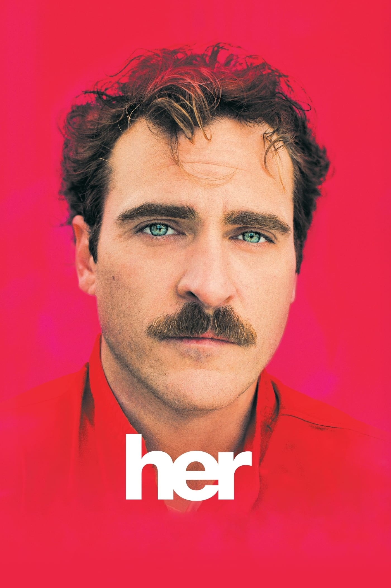

Her
Año: 2013
Género: Drama
Duración: 126 min.
Director: Spike Jonze
9
En un futuro cercano, Theodore, un hombre solitario a punto de divorciarse que trabaja en una empresa como escritor de cartas para terceras personas, compra un día un nuevo sistema operativo basado en el modelo de Inteligencia Artificial, diseñado para satisfacer todas las necesidades del usuario. Para su sorpresa, se crea una relación romántica entre él y Samantha, la voz femenina de ese sistema operativo.